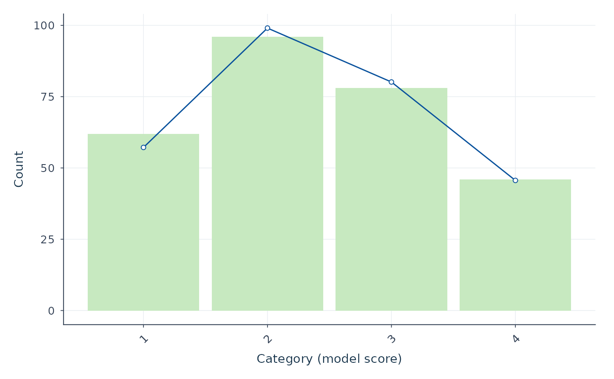

Build a rating-scale diagnostics report
Arguments
- fit
Output from
fit_mfrm().- diagnostics
Optional matching output from
diagnose_mfrm(). Stored step uncertainty and marginal-fit results are reused when supplied. Without diagnostics, only observed/plug-in category statistics and step points are calculated; no covariance or full diagnostic calculation is started.- whexact
Retained for call compatibility. Category ZSTD is unavailable because grouping by the observed category changes its reference distribution.
- drop_unused
If
TRUE, remove categories with zero count from the displayed category table. Usage totals still cover the full declared scale; unavailable counts remain visible, and score-support caveats are retained.
Value
A named list with:
category_table: counts, generating measures and descriptive residuals.AvgMeasureis the observed-category average oriented predictor;ExpectedMeasureweights all predictors by their category probabilities.AvgPersonMeasureandExpectedAverageretain distinct Person-only and predicted-score summaries. Category ZSTD and fit flags are NA: selecting by observed outcome destroys the universal unit-residual baseline.owner_category_table: unfiltered counts within each step ownermodel_context: model, estimator, step/slope owners and step scalenotes: interpretation outside the figurethreshold_table: model step/threshold estimates and stored uncertaintysummary: one-row summary with available/unavailable category counts and adjacent-threshold comparisons. Category-fit means identify their available denominators and describe displayed rows. Missing fit statistics/flags stayNA, including unused categories with no estimable category fit.category_usage: counts across the full scale, beforedrop_unusedthreshold_coverage: available, unavailable and decreasing adjacent-pair counts;NotApplicabledistinguishes binary scales from missing estimatescaveats: structured score-support warning/review rowsdiagnostic_mode: character scalar carried fromdiagnostics$diagnostic_mode("legacy","both", or"marginal_fit"); used by downstream reporting helpers to pick the correct expected-count basismarginal_fit: list bundle fromdiagnostics$marginal_fitwhen strict marginal fit was computed, otherwiseNULL. Carries the raw OverallRMSD / OverallMaxAbsStdResidual / per-cell tables that feed theMarginalOverallRMSDcolumns insummary.
Details
Summarizes observed category usage (category_table, category_usage, and
per-step-owner owner_category_table) and centered step estimates
(threshold_table, threshold_coverage). In category_table, Count sums
observation weights, AvgMeasure / ExpectedMeasure summarize the oriented
predictor (distinct from AvgPersonMeasure and ExpectedAverage), and
InfitZSTD, OutfitZSTD, and fit flags are NA because conditioning on the
observed outcome removes a unit-residual reference.
In threshold_table, stored diagnostics$parameter_uncertainty$steps are
keyed by StepOwner, StepFacet, and Step (SE_Status, CIEligible,
CIUse); GapFromPrev reports adjacent differences without skipping missing
steps, and ThresholdMonotonic checks nondecreasing point estimates within
sqrt(.Machine$double.eps) (NA for binary scales or missing pairs). Step
SEs describe centered step offsets, not curve crossings or adjacent gaps, and
threshold disorder is descriptive rather than an automatic merging rule.
References
Andrich, D. (1978). A rating formulation for ordered response categories. Psychometrika, 43(4), 561-573. doi:10.1007/BF02293814
Masters, G. N. (1982). A Rasch model for partial credit scoring. Psychometrika, 47(2), 149-174. doi:10.1007/BF02296272
Linacre, J. M. (2002). What do Infit and Outfit, mean-square and standardized mean? Rasch Measurement Transactions, 16(2), 878. (Source for the 0.5-1.5 mean-square heuristic review interval; this is not a source for threshold-gap rules.)
Wind, S. A. (2023). Detecting rating scale malfunctioning with the partial credit model and generalized partial credit model. Educational and Psychological Measurement, 83(5), 953-983. doi:10.1177/00131644221116292 (Recent simulation evidence on PCM- and GPCM-based rating-scale diagnostics; useful for interpreting the
summary(t8)$summaryflags in theGPCMroute.)
Examples
library(mfrmr)
# Saved synthetic MML/RSM analysis of example_operational.
# For your own data, fit a model first; see ?fit_mfrm.
example_fit <- readRDS(system.file("examples", "operational-mml.rds", package = "mfrmr"))
fit <- example_fit$fit
# Review category use and the fitted transitions between scores
categories <- rating_scale_table(fit)
review <- summary(categories)
review$summary
#> Categories DisplayedCategories AvailableCategoryCounts
#> 1 4 4 4
#> UnavailableCategoryCounts UsedCategories UnusedScoreCategories
#> 1 0 4
#> WeaklyIdentifiedThresholds MinCategoryCount MaxCategoryCount
#> 1 0 46 96
#> MeanCategoryInfit AvailableCategoryInfit MeanCategoryOutfit
#> 1 1.079498 4 0.9991048
#> AvailableCategoryOutfit ThresholdMonotonic ThresholdComparisons
#> 1 4 TRUE 2
#> AvailableThresholdComparisons UnavailableThresholdComparisons
#> 1 2 0
#> ThresholdOrderNotApplicable DiagnosticMode ExpectedCountBasis
#> 1 FALSE legacy legacy_plugin
#> MarginalFitAvailable MarginalOverallRMSD MarginalMaxAbsStdResidual
#> 1 FALSE NA NA
#> MarginalFlaggedCategories MarginalClassifiedCategories
#> 1 NA 0
#> MarginalUnclassifiedCategories
#> 1 0
categories$model_context
#> Model Method StepOwner StepSelection SlopeOwner StepScale
#> 1 RSM MML Common not_applicable centered_step_offset
head(categories$owner_category_table)
#> StepOwner StepFacet Category CategoryLabel RawCount Count OwnerRatings
#> 1 Common Common 1 1 62 62 282
#> 2 Common Common 2 2 96 96 282
#> 3 Common Common 3 3 78 78 282
#> 4 Common Common 4 4 46 46 282
#> OwnerWeight Percent ZeroCount UsageStatus
#> 1 282 21.98582 FALSE observed
#> 2 282 34.04255 FALSE observed
#> 3 282 27.65957 FALSE observed
#> 4 282 16.31206 FALSE observed
# Bars show observed counts; the line shows model-expected counts
# Recreate saved tables with the original fit and diagnostics after updating.
plot(categories)
